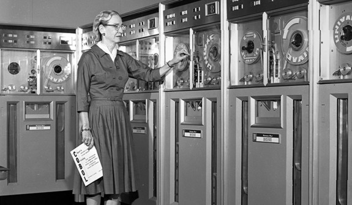

Grace Murray Hopper
A Legacy of Innovation and Service

Hopper believed that computers would someday be widely used
and helped to make them more user friendly. (Courtesy of the Computer History Museum)
- 1906- Grace Brewster Murray was born to Walter Fletcher Murray (Yale B.A. 1894, Phi Beta Kappa) and Mary Campbell Van Horne in New York City.
- 1928- Graduated from Vassar College with degrees in mathematics and physics.
- 1930- Received master’s degree in mathematics from Yale.
- 1931- Began teaching mathematics at Vassar while pursuing doctorate at Yale under computer pioneer Howard Engstrom.
- 1934- Completed Ph.D. in mathematics and mathematical physics from Yale and studied with the famous mathematician Richard Courant at New York University, during a one-year sabbatical
- 1943- Joined the U.S. Naval Reserve (Women’s Reserve) and assigned to the Bureau of Ships Computation Project at Harvard University. Responsible for programming the Mark I and punching machine instructions onto tape. Documented 561-page user manual for MARK-I
- 1945- Helped to develop the Mark II and Mark III computers for Navy at Harvard and She was the first refer to a computer problem as a “bug” and to speak of “debugging” a computer.
- 1946- left active service when the Navy turned down her request for a regular commission because of her age. Shortly thereafter Hopper left Harvard when it became clear she would not be promoted or granted tenure.
- 1949- Joined the Eckert-Mauchly Computer Corporation in Philadelphia as senior mathematician.
- 1952- Developed the first computer language “compiler” called A-0. Compilers translated mathematical code into machine-readable binary code, and they would eventually make it possible to write programs for multiple computers rather than a single machine. Developed Flow-Matic, the first programming language to use English-like commands.
- 1959- Promoted the language and its adoption by both military and private-sector users.
- 1971-1978- Served as a professorial lecturer in management sciences at George Washington University. Outside of academia, she organized myriad workshops and conferences to promote understanding of programming and expand the community of computer programmers.
- 1972- Received Yale’s Wilbur Lucius Cross Medal.
- 1977-1986- Received The Navy’s foremost propagandist for its computer program
- 1991- Awarded the National Medal of Technology, the nation’s highest technology award and was the first woman to be so honored as an individual.
- 1992- Worked as a senior consultant in public relations at the Digital Equipment Corporation till her death.
- 2016- Posthumously received the Presidential Medal of Freedom, the nation’s highest civilian honor, in recognition of her remarkable contributions to the field of computer science.
Grace Hopper Timeline